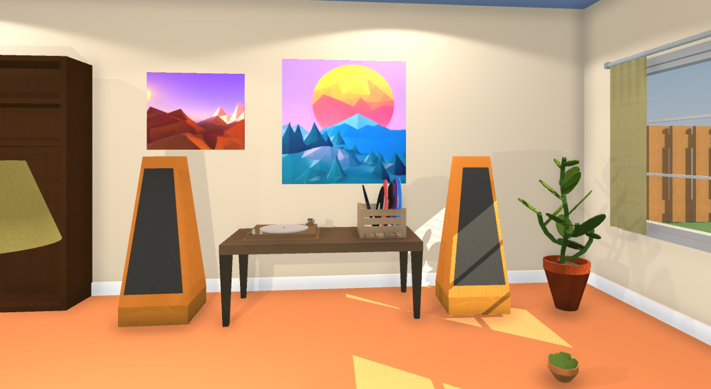
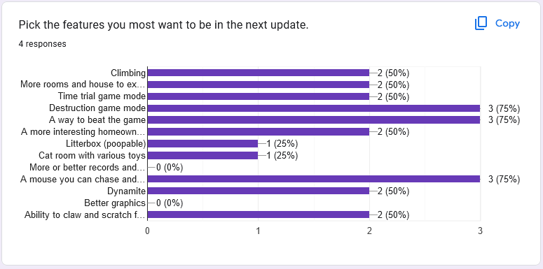

ELIAS WILLERUP

Cat owners! Has your cat ever pushed a glass of water off your counter for no reason? It's probably made you wonder what it's like inside the feline's head. This is what I wanted to capture in my game Catmageddon VR.
Catmageddon VR started as a school assignment. In the GIMM program we were assigned to make a VR game of our own choice, making everything from scratch (excluding the engine).
Upon its conception it was a totally different game. My early game design document describes a top-down home defense game where the player must defend their house against an attacker using various makeshift tools. In fact, the project file is still named "Home Invasion."
My first "prototype" was a decorated physics house in first person. It had source engine style pick up mechanics and the goal was to throw household objects into targets. After hitting every target in the house, a physics saw gets spawned that can wreak havock on anything it comes in contact with.
I realized that destroying the house was more fun than actually protecting it. When it came time to port the game to VR I pivoted and honed in on the mayhem. My intuition told me to make the player a cat, so I shrank them and gave them paws. I also brightened the lighting and style to encourage playfulness.
The player got points for throwing something on the floor. The twist is that a homeowner character roams the house, and if the owner sees their cat throwing their things on the floor, points are deducted instead.
Now comes playtesting. Thankfully, playtesters gave very positive feedback. Most enjoyed the concept, and I had one player tell me that they could zone out for hours and play my game. They often viewed the game as a sandbox and often shared at least one idea of what to add next.

There were so many ideas, so I decided to poll my peers on their desired features. Everyone I polled wanted a way to beat the game. I didn't expect this, because personally I don't mind if a game doesn't have an objective. If I followed my preferences and made a goal-less game it might turn some players away.
Another top request was a mouse that the player can chase. Nobody voted for graphics or music improvements, so I know that the sound and visuals are solid for now.
There's one feature that was not heavily requested that I am choosing to add anyway. The "cat room" only got one vote but I believe it will serve several valuable purposes.
As of now, the next update is pending. Follow my Twitter or Linkedin for progress updates on Catmageddon!